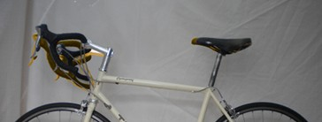

| Riding position |
 |
|
|
|
Written by BikeFixer
|
|
Summary
What is the best riding position?
|
There is no universal, 'best-for-everyone' riding position - people
have different riding styles and their bodies are differently
proportioned. So:
- what kind of ride you are looking for - more relaxed? more sporty? something inbetween?
- what are you like physically? - longer than average legs? shorter than average body? less flexible than average back?
Finding the best riding position for you is a process. Adjust
your set up, and see how it feels. Is it an improvement? If
so, why? Then make another adjustment, and so on.
|
|
|
Knee Angle Rule: With the pedal at the bottom of the
downward stroke, set the saddle so that the angle at the knee is 25-30
degrees. Mechanically, this is an efficient arrangement, so it is common
amongst 'sporty' riders.
Saddle-Spindle Rule: Set the saddle so that the
distance from pedal spindle to top centre of the saddle equals your
inside leg (crotch to floor) x 1.09. This formula approximately
describes many sporty riders' set ups - strange but true!
Other rules: as you pedal sitting on the saddle:
- keep your hips stationary - they should not move up and down as you stretch around the bottom of a stroke;
- keep your knees bent - they should never lock straight.
Working joints hard outside their natural tolerances will lead to injury.
Comment: New bikers often set the saddle quite low,
so that, when seated, toes still touch the ground. As you get more
confident, a more efficient, comfortable position might be higher.
|
|
knee angle = 25-30 degrees
|
pedal-saddle = insidelegx1.09
|
|
|
2. Adjust saddle forwards and back
|
|
Riding Style
|
Adjustment
|
|
Sporty
|
set the saddle so that, with the pedal pointing forward and the crank
horizontal, the front of the leading knee is directly above the pedal
spindle.
|
|
Relaxed
|
set the saddle slightly further back, so that with the pedal pointing
forward and the crank horizontal, the front of the leading knee is
fractionally behind the pedal spindle. Sitting further back tends to
bring up the handlebars, so that the back does not have to arch too much
(see handlebar height). Sitting further back also transfers a little
weight from the handlebars onto the pedals and saddle - worth a try, if
you are getting problems in wrist, neck and shoulders.
|
Saddle angle: A horizontal saddle is usually right
for everyday riding. If the saddle tilts, you'll either slide forwards
onto the narrow front of the saddle, or backwards and have to cling on.
Saddle design: The more upright your position, the wider the saddle. The more leaning forward your position, the narrower the saddle.
|
|
front knee above pedal spindle
|
|
Buy kit?
Tools you need for this fix.
|
Ads. Selected by BikeFixer |
|
|
Buy Saddle
Comprehensive range of quality products
Worldwide delivery
www.wiggle.co.uk/Saddles
|
 |
|
|
Buy Stem
Comprehensive range of quality products
Worldwide delivery
www.wiggle.co.uk/Stems
|
|
|
3. Adjust handlebar height and reach
|
|
Riding Style
|
Adjustment |
|
Sporty
|
set the bars lower - many sporty riders have bars 2-3 cm lower than
the saddle to reduce their profile to the wind. But remember -
aerodynamics do not count for much under 20mph. Are your really going
that fast?
|
|
Relaxed
|
raise the handlebars. A more upright position is often preferred by
older riders with less bendy backs, commuters who need a good view of
their surroundings, or on long rides.
|
Other rules:
- keep your arms slightly, and comfortably bent. Most of your weight should be borne by the pedals and saddle - not the bars.
- do not ride for long periods with wrists flexed (in, out, up or
down). Keep your hand, wrist and lower arm within the range of 'natural'
alignments.
Buy the right stem: As you lean forward, so
your hands extend further forward also. Similarly, as you sit up, so
your 'reach' is reduced. But your handlebars stay in the same
place. So, as you adjust your position, your bike may begin to
feel too short or too long.
In this case, consider flipping over your stem (the 'stick' that
connects the steering column to the handlebars), or consider buying a
new one. Stems have different amounts of 'rise' (increase in
height) and length (forward extent), and the right stem will give you
the handlebar position you need.
|
|
up + back = more relaxed
|

down + forward = more sporty
|
|
|
|
Cleats are the 'clips' on special cycling shoes that securely attach
the shoe to the pedal. They make for more efficient riding.
Ball-of-foot-above-spindle rule: place the ball of
the foot directly above the centre of the pedal axle. This is efficient,
stable and reduces stress around the ankle.
Leg-inline rule:
try to keep the knee in line with the hip joint and ball of the
foot. It is mechanically inefficient, if your knee wavers in an
out during the stroke. That said, not everyone has perfectly
straight, symmetrical legs so find your 'natural' alignment.
|
|
hip-knee-foot aligned
|
|
|
|
|
You don't feel FIXED? Any new position may feel a strange at first -
your muscles will be accustomed to your old position, so try a new
position for a while - it may feel better eventually.
|
|
|
|
About BikeFixer
BikeFixer is a co-op of bikers and web designers.
| "mc" grew up car-free in the countryside, and had to ride a bike
from an early age – absolute magic! In later life, he survived London
traffic and l’Etape du Tour. |
|
Sources
The books below are tremendously helpful, but there is a lot of material to get through.
- Ballantine, R. and Grant, R. 1994, Richards Bicycle Repair Manual. Dorling Kindersley
- Downs, T. 2005, Bicycle Maintenance & Repair
- Haynes 2007, The Bike Book - Complete Cycle Maintenance
- Park 2008, BBB-2 Big Blue Book of Bike Repair, Park Tools
- Van der Plas, R., 2007, Bicycle Repair. Repair and Maintenance of the Modern Bicycle
Sponsorship
Top10bikefixes is going for gold with Velo Club de Trabail - “Chapeau” to past, present and future members.
If they knew how to fix their bikes, they would not keep the rest of the team waiting around!
|
|
|
Last Updated on Friday, 13 January 2012 12:00 |
|